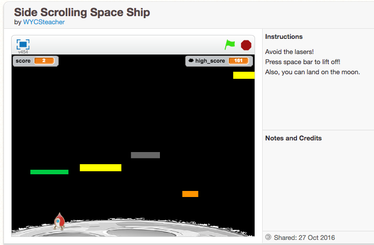

I am a girl who codes from Sumware, CA. I will be in the 12th grade in the fall, and I am looking forward to applying to colleges. I live at home with my mom, my brother, and my cat named Seymore. When I'm not coding, you can find me listening to music with my friends or reading.
Likes : I love a great science fiction novel. Right now I am reading The Three Body Problem, by Cixin Liu.
Dislikes: I really don't like fish. They have dead eyes that freak me out!
Favorite Websites: New York Times: I like to stay up to date, and to do the crosswords! xkcd.com: A great internet comic Tumblr: I love the pictures that people I follow post.
Recent Projects: Side Scroller Project: Last week, I build a cool side scroller project in Scratch. To build it, I learned about storyboarding, graphic design and using the concepts of functions, loops, conditionals, and variables. Check out the screenshot below! 